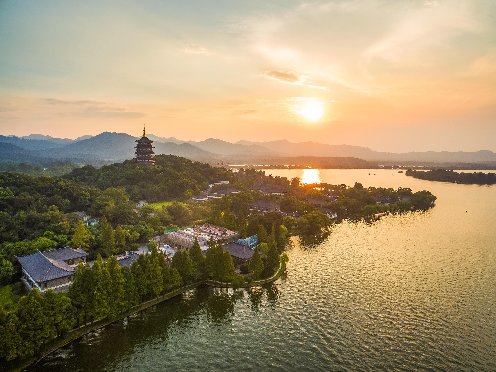

Scenic SpotsMore
- West Lake: The iconic landmark of Hangzhou, surrounded by historical structures and gardens
- Song City: A theme park that recreates the ambiance of Hangzhou
- Qiandao Lake: Famous for its clear waters and abundant fishery
- Xixi Wetland Park:Providing rich natural landscapes and wildlife resources
- Hupao Spring: Celebrated for its surrounding tea gardens
.........
Hangzhou Cuisine
More- West Lake Vinegar Fish: This is one of the most famous dishes in Hangzhou
- Longjing Shrimp: This dish is made using fresh river shrimp cooked with Longjing tea
- Dongpo Pork: Named after the Song Dynasty literary figure Su Dongpo
- Pian'erchuan: A dish made with plenty of things
- Song's Wife Fish Soup: The broth is milky white and delicious.
- KFC: It appears everywhere in Hangzhou


Cultural Events
More- West Lake Musical Fountain
- Tea Culture Activities
- Song Dynasty Town "Qian Gu Qing"
- West Lake Cultural Square Activities
- Intangible Cultural Heritage Experiences